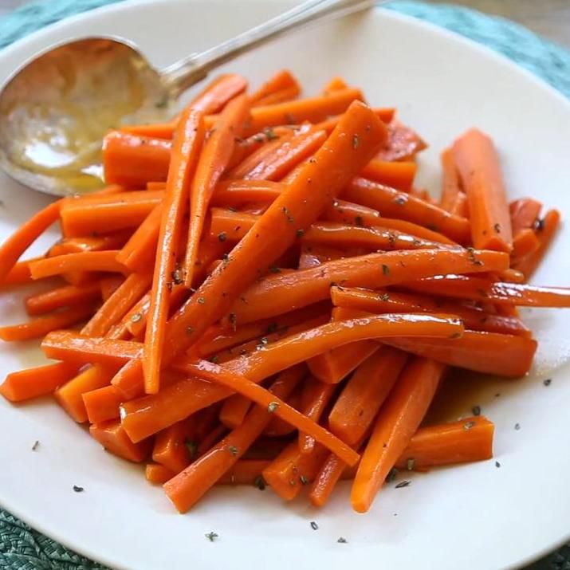

Glazed Carrots

Description
Looking for a simple side dish? It couldn't be easier to make these irresistible glazed carrots with just five basic ingredients.
Ingredients
- Carrots: Look for firm, plump, bright, and smooth carrots.
- Butter: You'll need about ¼ cup butter to make these caramelized carrots.
- Brown sugar: You can use light or dark brown sugar.
- Seasonings: These glazed carrots are simply seasoned with salt and ground white pepper.
Steps
- Cook the carrots: Place the peeled and cut carrots in a saucepan, cover with water, and bring to a boil. Reduce the heat and simmer until the carrots are tender. Drain.
- Glaze the carrots: Melt the butter in a saucepan, then add the sugar, salt, and pepper. Add carrots and toss until well-coated.
Go Back